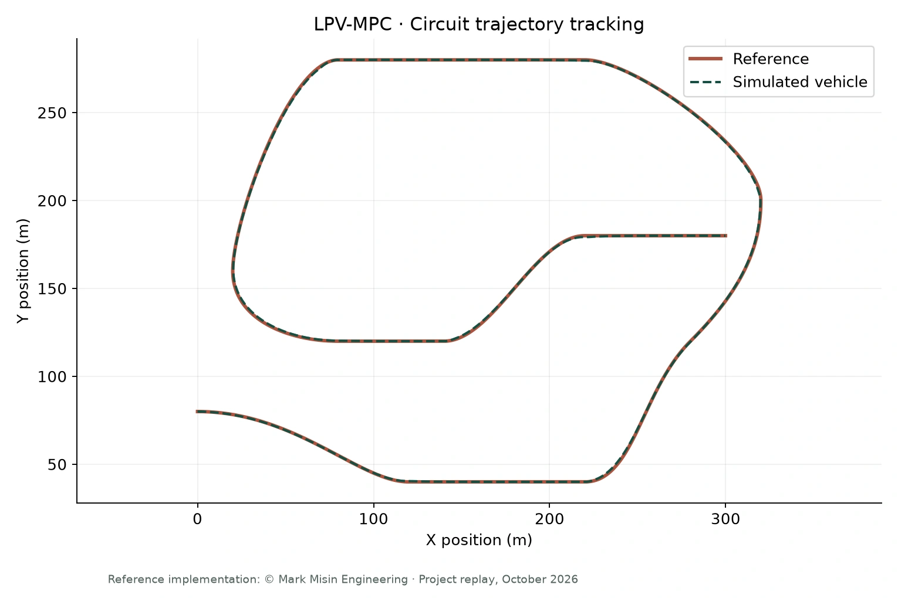
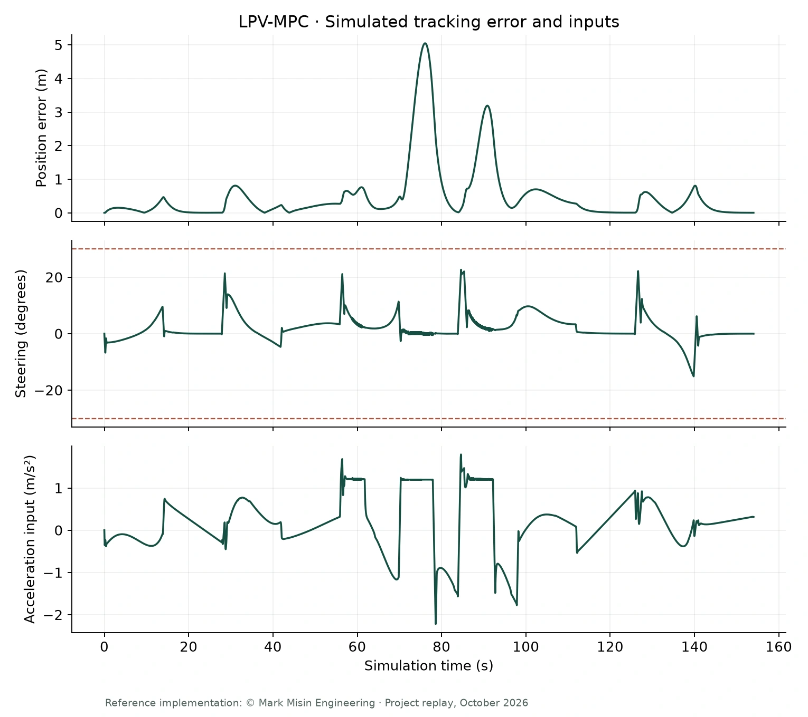

Optimization · Vehicle dynamics
Constrained model predictive control
A Python vehicle-tracking project using linear parameter-varying model predictive control (LPV-MPC), a six-state model, and explicit motion constraints.

The problem
A vehicle tracking controller must balance path error with actuator and vehicle limits. I used LPV-MPC reference theory to create a Python vehicle-tracking project that updates the prediction model along the horizon and solves for constrained control inputs.
Engineering work
Vehicle modeling and prediction
Worked with a six-state nonlinear bicycle model and steering and acceleration inputs. Used a 20 ms model step and a 10-step horizon, updating the prediction matrices along the expected trajectory.
Constrained optimization
Applied an augmented input-increment formulation with tracking-error, terminal-error, and input-rate penalties. Solved the quadratic program through qpsolvers using the cvxopt backend.
Motion constraints
Included ±30° steering limits, 1–30 m/s longitudinal speed bounds, speed-dependent lateral-velocity limits, and acceleration bounds that account for tire-force terms.
Simulation and visualization
Examined closed-loop reference tracking and the resulting steering and acceleration commands. The project includes reference-path generation and visualizations of the vehicle motion and state histories.
- Current vehicle state
- Update LPV model
- Solve constrained QP
- Apply first input
- Repeat
Results & scope
The default circuit configuration was replayed for 154 simulation seconds (7,701 samples). Euclidean position root mean square error (RMSE) was 1.01 m, with a maximum position error of 5.05 m and a maximum absolute steering command of 22.62°. These results describe this specific simulation run. The 20 ms parameter is a model discretization step, not a measured solver runtime.
A closer look


Read more
- Download project code & reproduction notes · ZIP ↗
- Replay measurements · JSON ↗
- Résumé · MPC project ↗
Built on LPV-MPC reference theory and implementation by Mark Misin Engineering. The downloadable code retains the original copyright and redistribution terms.